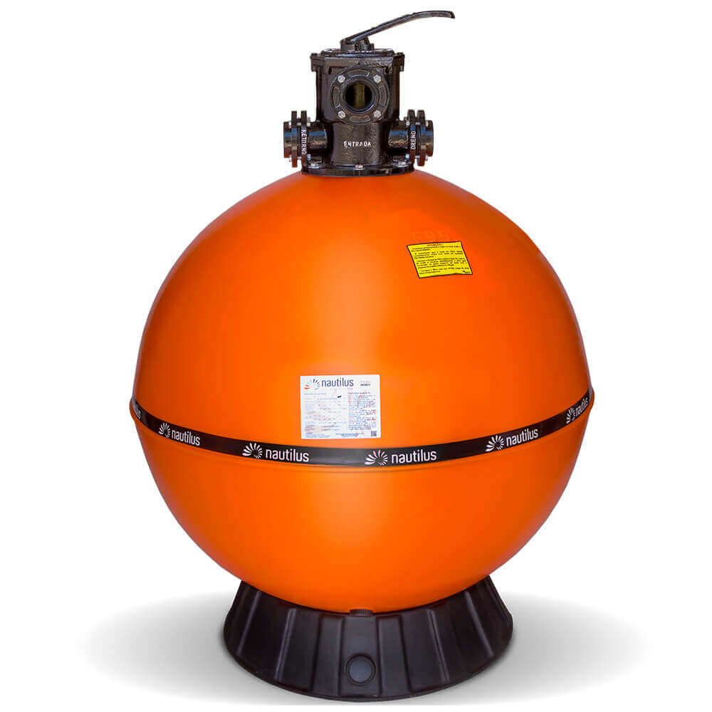
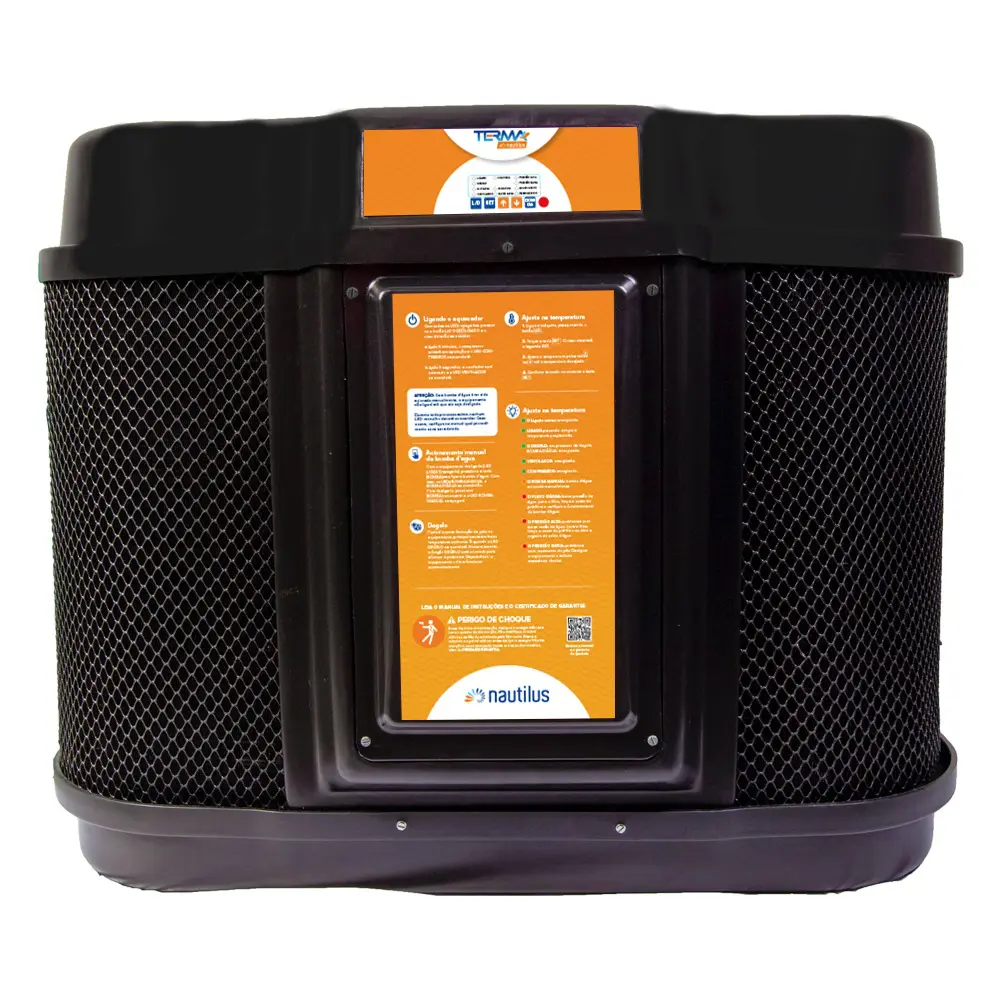
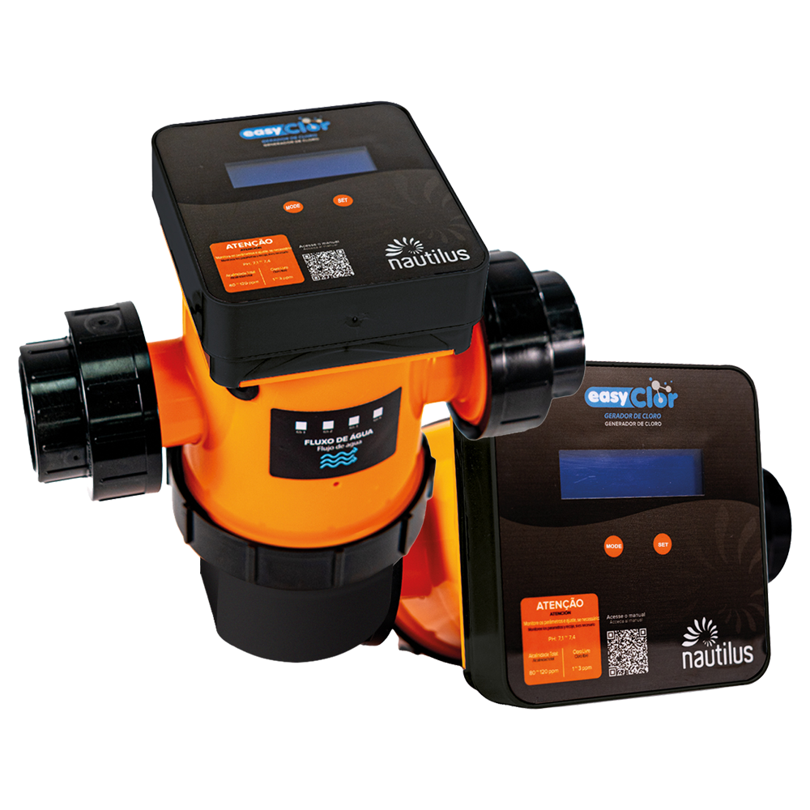
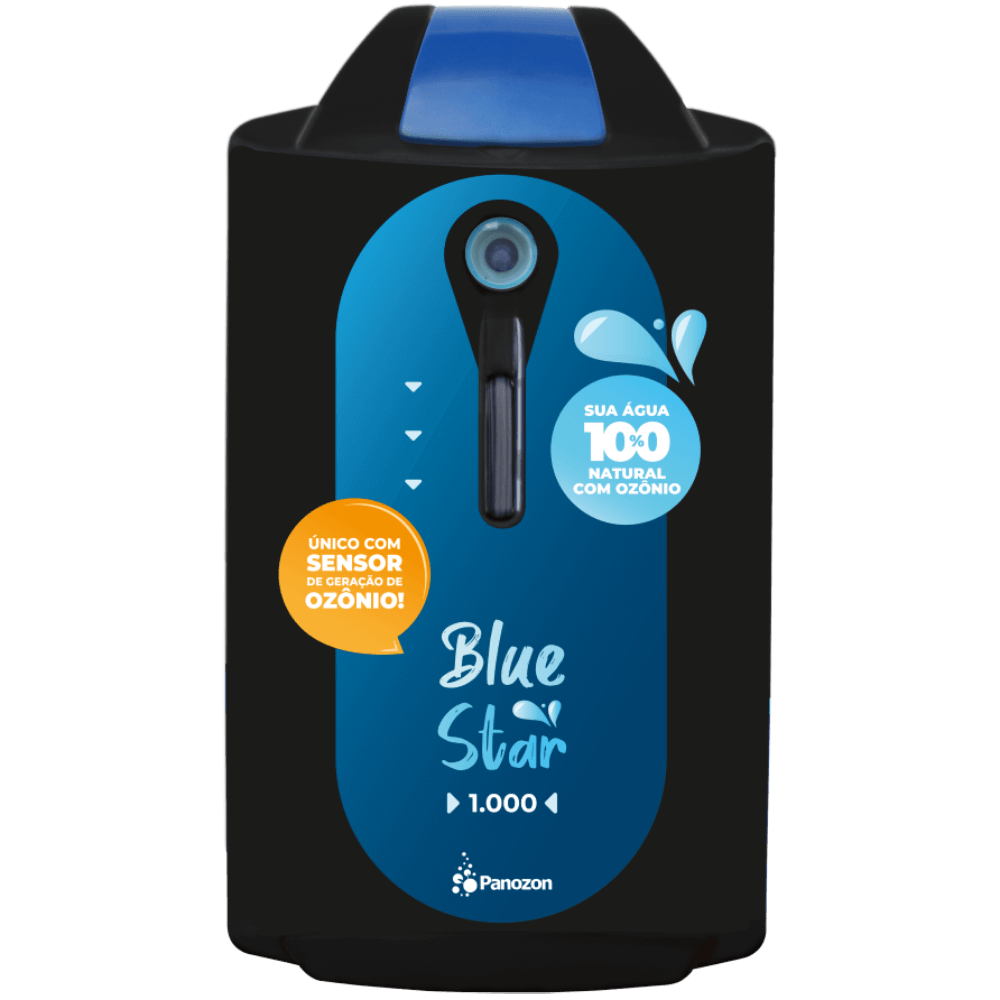
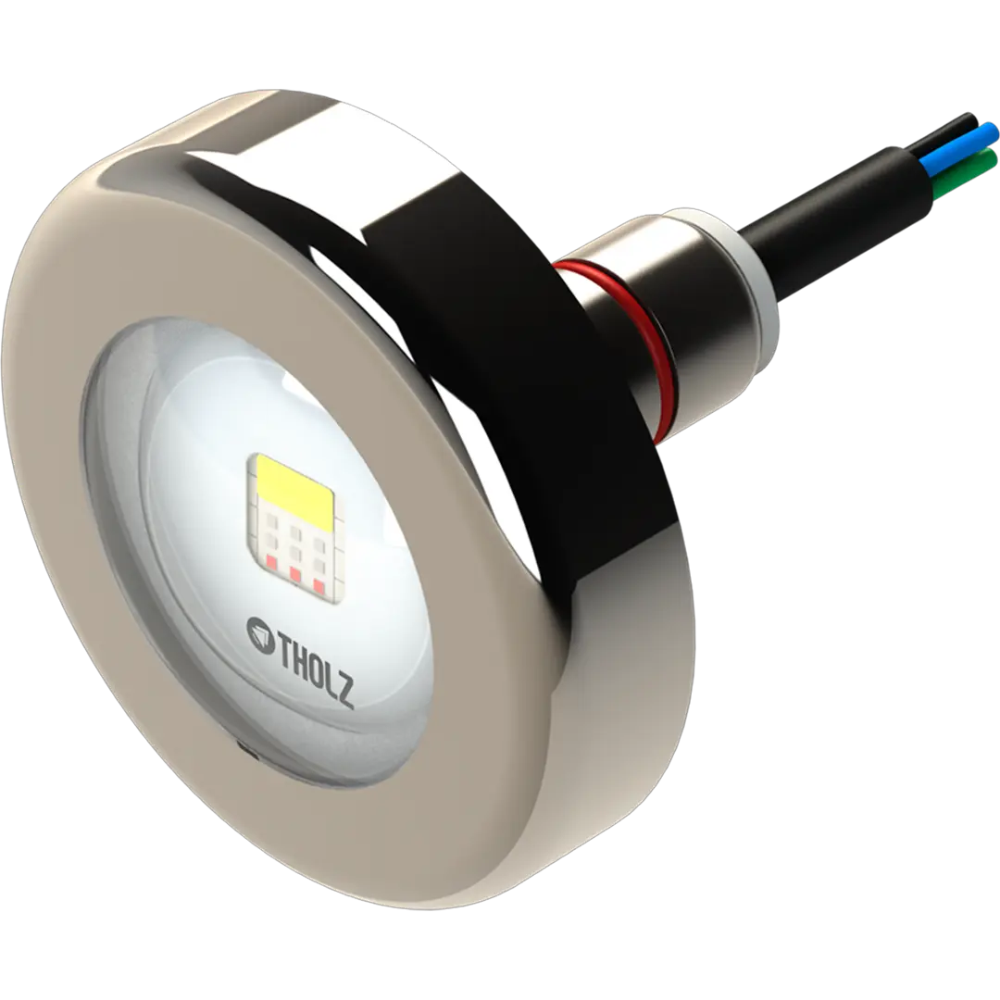

Circulação e limpeza
Filtros e motobombas
O conjunto precisa ser dimensionado para movimentar e filtrar a água de acordo com as características de uso.
Pedir orientaçãoExplore as principais linhas trabalhadas pela Veneza. As imagens mostram exemplos de equipamentos e aplicações; modelos e disponibilidade são confirmados no atendimento.
Um produto só faz sentido quando é compatível com o volume, o uso e a infraestrutura da piscina.

O conjunto precisa ser dimensionado para movimentar e filtrar a água de acordo com as características de uso.
Pedir orientação
Temperatura desejada, vento, área da piscina e frequência de uso orientam a escolha do sistema de aquecimento.
Conversar sobre aquecimento
A eletrólise salina produz cloro durante a circulação da água e pode simplificar a rotina de tratamento.
Entender a indicação
O ozônio complementa o tratamento da água. A indicação considera a circulação e o sistema de desinfecção existente.
Pedir avaliação
Refletores bem posicionados valorizam a piscina e melhoram a visibilidade durante o uso noturno.
Planejar iluminação
Uma solução de revestimento a ser avaliada conforme o projeto, as condições da piscina e o resultado desejado.
Conversar sobre revestimentoQuando a piscina ainda está no planejamento ou passará por reforma, o projeto ajuda a integrar os equipamentos ao sistema completo. A Veneza desenvolve documentação técnica em BIM/Revit, DWG e PDF.